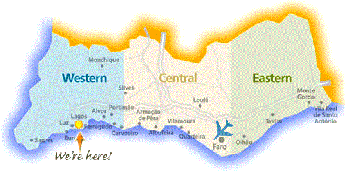

Lagos - Algarve - Portugal
Welcome to Lagos Uncovered! Your Lagos holiday guide!
Lagos Uncovered! brings you everything you need to know about holidays in Lagos, Portugal. Useful Algarve information, beaches, accommodation, map, restaurants, bars, things to do and in fact, all things Lagos Uncovered!

 Lagos is a fantastic town in the western Algarve that can certainly be enjoyed by all age groups. It is full of historical interest with it's
origins dating as far back as 2000 years BC when it was known as Lacobriga. Lagos has always had a seafaring connection, originally visited by
Phoenicians and Carthaginians and then, during the 15th century, was the base for the 'voyages of the Discoveries' instigated by Henry the Navigator
when trade between Africa and Portugal brought a great deal of wealth into the town.
Lagos is a fantastic town in the western Algarve that can certainly be enjoyed by all age groups. It is full of historical interest with it's
origins dating as far back as 2000 years BC when it was known as Lacobriga. Lagos has always had a seafaring connection, originally visited by
Phoenicians and Carthaginians and then, during the 15th century, was the base for the 'voyages of the Discoveries' instigated by Henry the Navigator
when trade between Africa and Portugal brought a great deal of wealth into the town.
The older part of Lagos is still circled by the city walls that were constructed during the 16th century when it was the residence of the governors of the Algarve and the fort, Ponta da Bandeira, by Batata beach is part of the 17th century fortifications that were added to protect the town. Behind it (on the opposite side of the road) is the Porta de São Gonçalo (St.Gonçalo’s gate) with a watchtower on either side and just to the right of this is the Governors' Castle (of Arab construction).
 The square next to the Governors' castle
is the Praça Infante Dom Henrique with a statue of Prince Henry looking out to sea. To the left of the square at the back is Igreja da Santa Maria. The
facade of this church is 15/16th century but it was rebuilt in the 18/19th centuries.
The square next to the Governors' castle
is the Praça Infante Dom Henrique with a statue of Prince Henry looking out to sea. To the left of the square at the back is Igreja da Santa Maria. The
facade of this church is 15/16th century but it was rebuilt in the 18/19th centuries.
Walk along the cobbled street at the back of the square just past Santa Maria church and you will come to the famous Lagos 'golden church' of St. Anthony which was rebuilt in 1769 - entrance to this church is through the museum at the side and both the museum and the church are well worth visiting. On the opposite side to the churches is the 'Slave Market' from the 15th century, where slaves brought back from the discovery voyages were sold. There is another church, St. Sebastian, dating from 14th to 16th century, which is on a hill just behind the fish market with fantastic views over Lagos bay.
 Lagos is certainly full of history,
but it is also a vibrant town with lots going on - the next square along, in the middle of town, is Praça de Gil Eanes and this is often the setting for
evening entertainment throughout the year - a comical unicyclist, live music or a medieval fair are just some of the events we have enjoyed. If Portugal
are playing football, or there is a major competition on, the cafes will have the big screens up in the square and everyone joins in the excitement
(very good naturedly as well).
Lagos is certainly full of history,
but it is also a vibrant town with lots going on - the next square along, in the middle of town, is Praça de Gil Eanes and this is often the setting for
evening entertainment throughout the year - a comical unicyclist, live music or a medieval fair are just some of the events we have enjoyed. If Portugal
are playing football, or there is a major competition on, the cafes will have the big screens up in the square and everyone joins in the excitement
(very good naturedly as well).
There are several streets leading off Praça de Gil Eanes, with restaurants to suit all tastes! The centre of Lagos really isn't very big, but it can be a bit confusing! There are so many little streets criss-crossing that it is quite easy to loose your bearings, but to be honest, as long as you head down hill you are sure to get back to the centre! There are loads of bars that stay open until the early hours and in the summer time the centre of town is alive with people of all ages enjoying themselves. There are always touts from the different bars offering a free drink or 'shot' at 'their' bar, but it can be a useful way to find them as they are often tucked away down one of the many little side streets.
 To explore a little further, carry on along the Avenida dos
Descobrimentos (avenue of the Discoveries) which runs along the water front and you will come to the very modern, Lagos Marina. There is a footbridge over
the Bensafrim river to the marina which, on one of Lagos' windy days, can be a very blowy walk, but you do get a lovely view of the town and the 'boats' in
the marina!
To explore a little further, carry on along the Avenida dos
Descobrimentos (avenue of the Discoveries) which runs along the water front and you will come to the very modern, Lagos Marina. There is a footbridge over
the Bensafrim river to the marina which, on one of Lagos' windy days, can be a very blowy walk, but you do get a lovely view of the town and the 'boats' in
the marina!
The 450+ berth marina, which has both the Euromarina Anchor Award and the Blue Flag award, has a variety of shops, bars and restaurants to enjoy,
all with a great view of the 'boats'!
There is normally some music in the bars and if you want to watch your favourite football team, they screen the big matches and various sports events!
Lagos train station is behind the marina and the road that runs past the station takes you to the beginning of Meia Praia beach - a 4km stretch of
golden sand with several beach bars along it's length (some of which stay open all year round).
On the right hand side, just over the marina bridge, is the dock area for the fishing boats and several places selling the freshly caught fish
(some also have small restaurants upstairs).
 If you ask for directions
in Lagos you will almost certainly be directed by way of the various roundabouts! The first one at the entrance to Lagos is very obviously
the 'Ship' roundabout (the tourist office is nearby). The 'Ball' roundabout (a very large black ball) is at the top of the hill at the far
end of the Avenida dos Descobrimentos, past the fire station - on the way to Dona Ana, Ponta da Piedade and Porto de Mos. The third 'landmark'
is 'The Chairs' (7 large perspex chairs that light up at night!), this is up the hill past the Lidl supermarket at the opposite side of town to the 'Ball'.
If you ask for directions
in Lagos you will almost certainly be directed by way of the various roundabouts! The first one at the entrance to Lagos is very obviously
the 'Ship' roundabout (the tourist office is nearby). The 'Ball' roundabout (a very large black ball) is at the top of the hill at the far
end of the Avenida dos Descobrimentos, past the fire station - on the way to Dona Ana, Ponta da Piedade and Porto de Mos. The third 'landmark'
is 'The Chairs' (7 large perspex chairs that light up at night!), this is up the hill past the Lidl supermarket at the opposite side of town to the 'Ball'.
While we are on the subject of supermarkets - Lagos is very well provided for - check our Useful Information for location and opening hours of the main supermarkets. There are lots of mini-mercados dotted around and they stock a very wide range of products, fresh breads, meats, milk etc, just the same as the large supermarkets, and for the vegetarians - a lot now stock some soya and tofu products.
 There is a local Lagos market on Saturday mornings
in a building near the bus station (opposite the marina footbridge) - it has all the fresh fruits and vegetables, olives, honey, figs, almonds and much
more. It's quite a small market, but very popular and cheap! If you decide to go, try and get there early and take 'small change' with you
(euros and 50 cents should do!).
There is a local Lagos market on Saturday mornings
in a building near the bus station (opposite the marina footbridge) - it has all the fresh fruits and vegetables, olives, honey, figs, almonds and much
more. It's quite a small market, but very popular and cheap! If you decide to go, try and get there early and take 'small change' with you
(euros and 50 cents should do!).
There is also a daily market in the recently renovated fish market nearer to town - all the fresh fish and seafood is downstairs and upstairs are market stalls full of fruit, vegetables, dried fruits and preserves and also fresh bread. The top floor has a restaurant and a fantastic view across Lagos bay.
Lagos has some stunning views, it has to be said! From the Ponte da Piedade (in front of the lighthouse) you get a fantastic view of the sweeping sands of Lagos bay with the Monchique hills as a backdrop, and you can see all the way to Sagres to the west and past Albufeira to the east.
Thank you for visiting LagosUncovered.com and we hope you enjoy our website!
For more information about the Algarve (Portugal) you can see our other Algarve Uncovered Resort Guides!